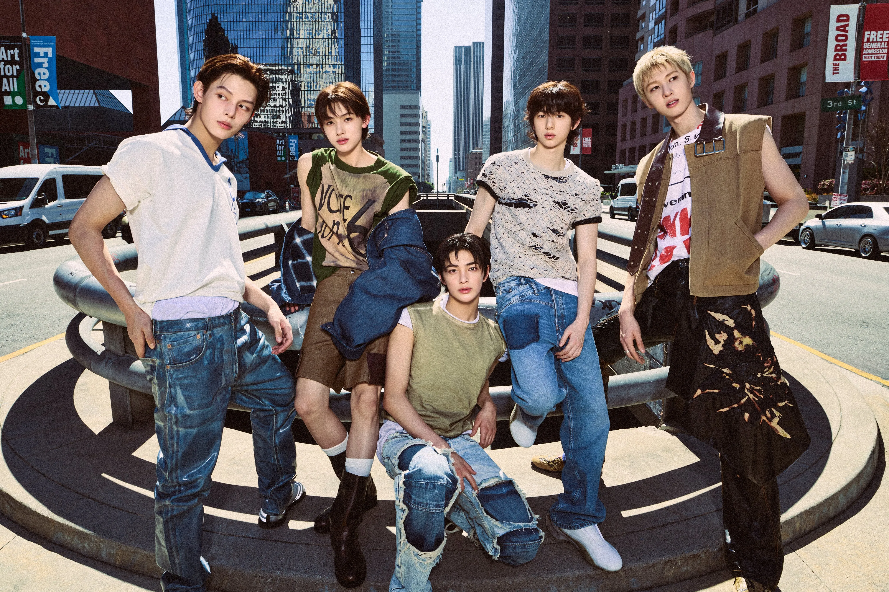
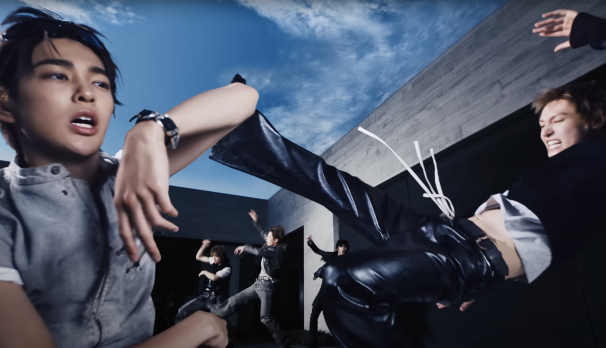

Cortis
Cortis
"Color Outside the Lines". This phrase represents the group's philosophy of creative freedom, breaking boundaries, and thinking freely from the world's standards. The name also draws inspiration from cortisol, a hormone, to symbolize their resistance to creative pressures.